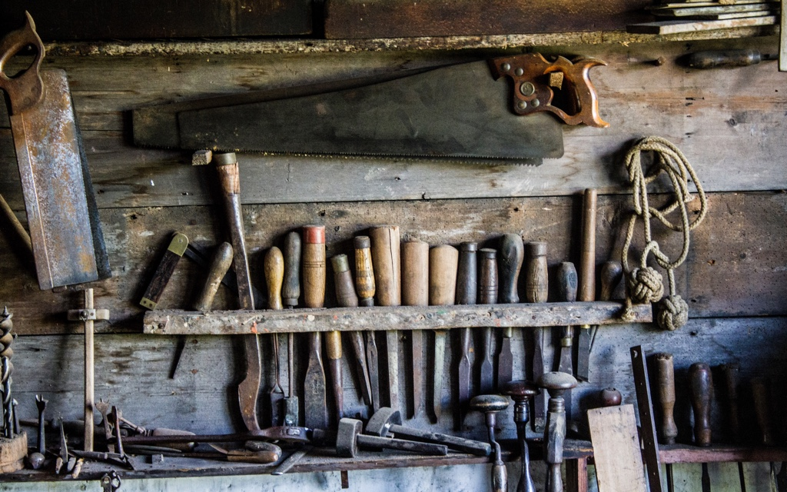

Занятие 8. Введение в Django и Django ORM
Web Programming @ MIPT, 2016-2017
django-admin.py startproject my_projectpython manage.py migratepython manage.py runserverpython manage.py startapp main_sitepython manage.py makemigrationspython manage.py checkpython manage.py createsuperuser